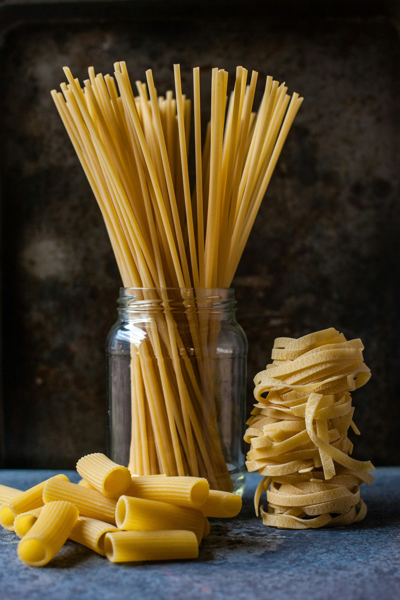
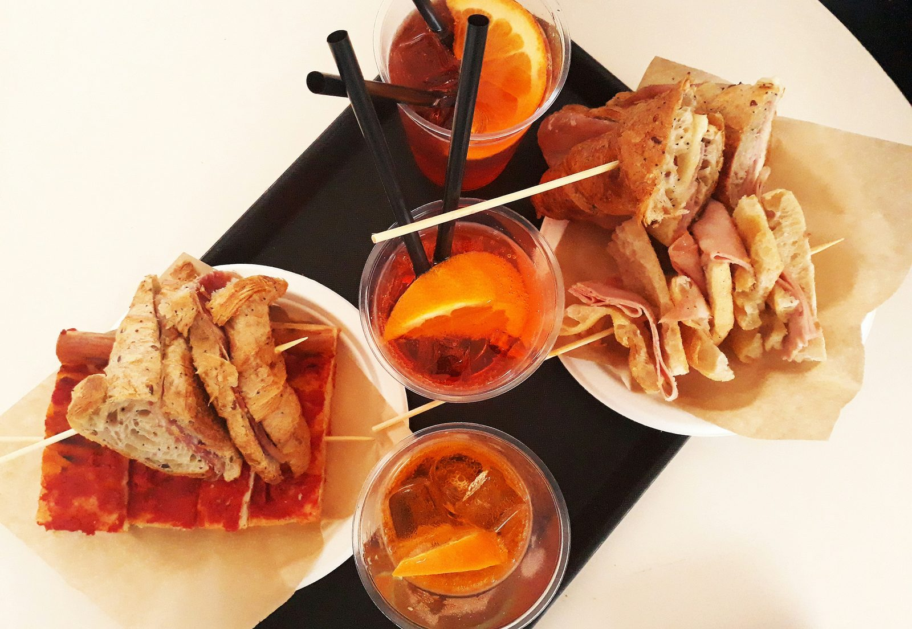
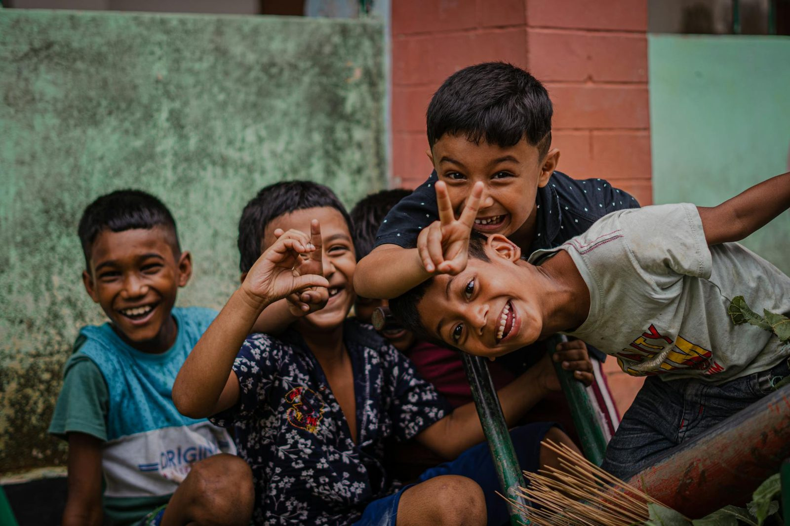
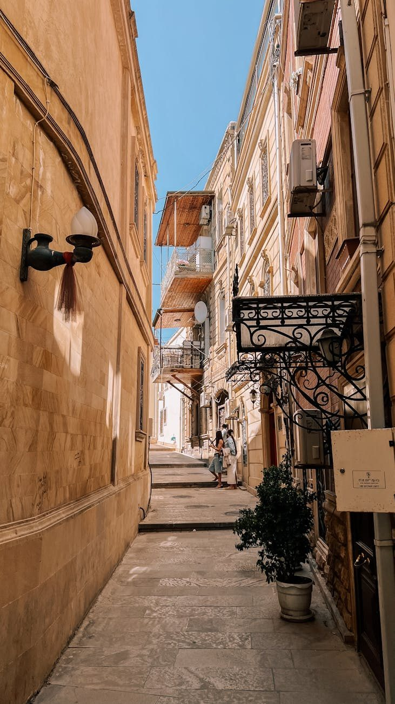
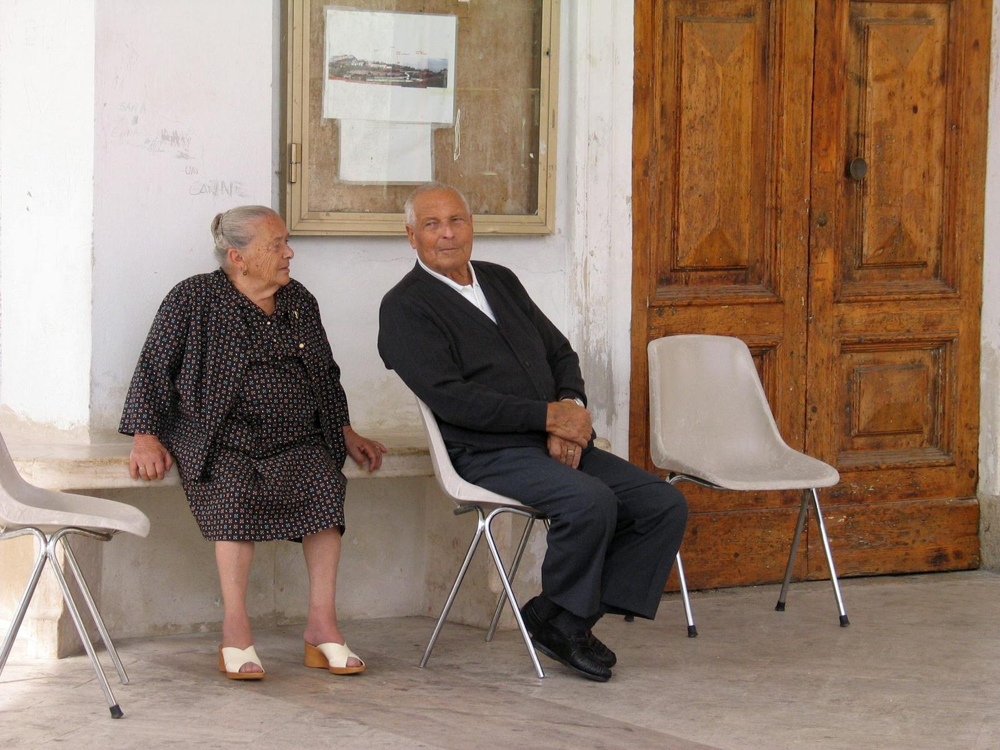
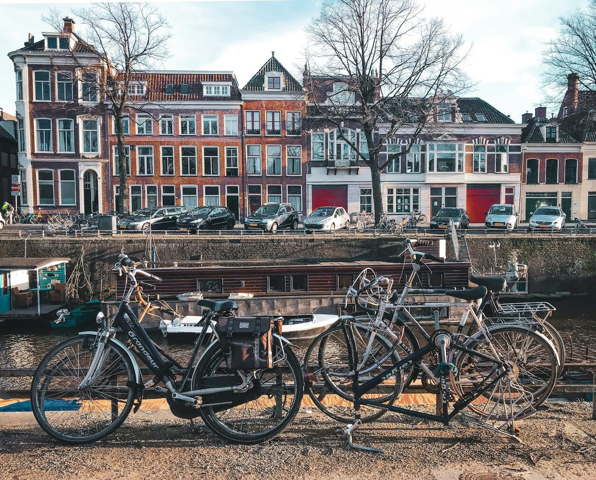
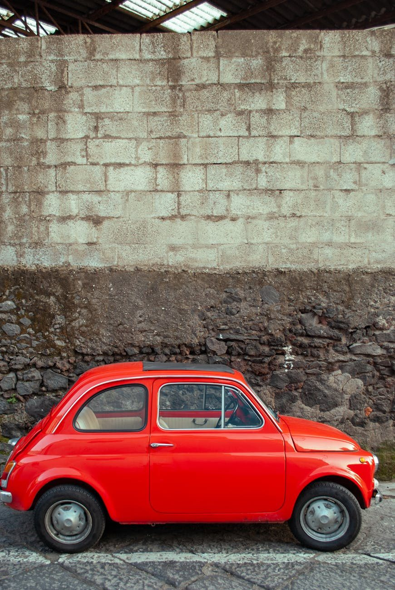
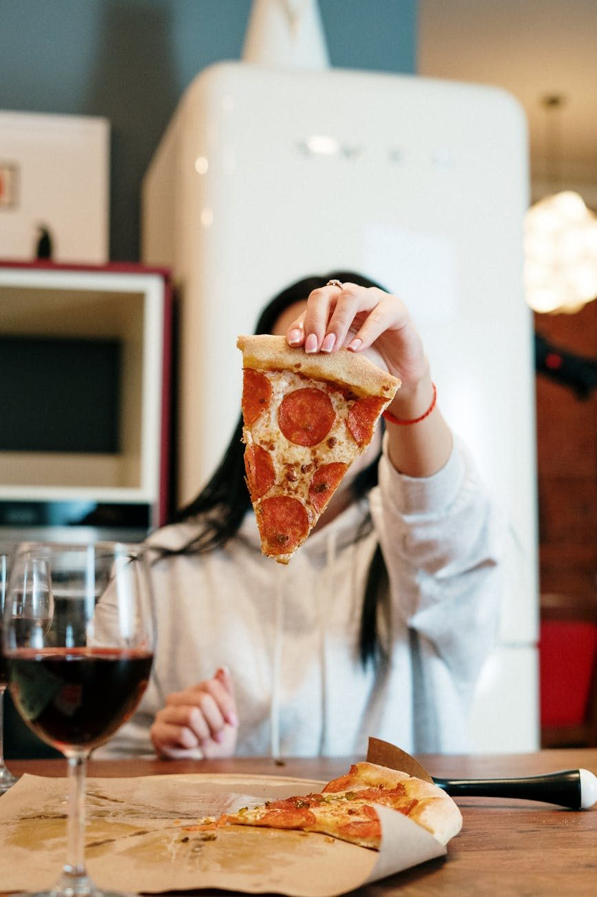
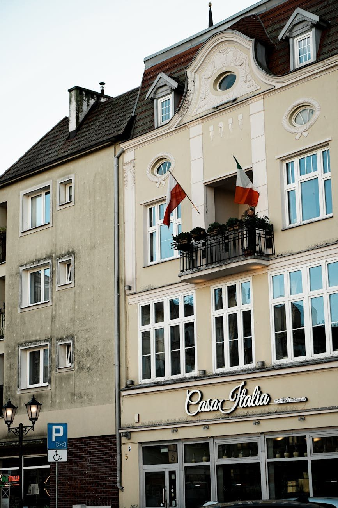

Reading Practice
di Alessio · insegnante di italiano per stranieri, master ITALS
14 articoli in questa categoria.

Italiaanse literatuur in het origineel lezen: waar begin je
Iedereen wil Dante in het origineel. Bijna niemand zou daar moeten beginnen.
26 juli 2026Running an Italian book club when nobody is fluent yet
A book club fixes the one thing solo reading cannot: it makes you finish.
26 July 2026
Graded readers or dual-language editions? An honest comparison
Three formats, three different things happening in your head. Choosing wrong is why most people stop reading.
26 July 2026Dante for Italian learners: where to actually start
Everyone wants to read the Commedia in the original. Almost nobody should start there.
26 July 2026
Reading I Promessi Sposi in Italian: a realistic plan
Six hundred pages of nineteenth century Italian. There is a way in, and it is not the original edition.
26 July 2026Italian graded readers: which classic at which level
Cuore at A1, Pinocchio at A2, Deledda at B1, Manzoni at B2. A reading order that does not break your motivation.
26 July 2026Italiaanse klassiekers lezen terwijl je de taal nog leert
Pinocchio, De verloofden, Pirandello: welke Italiaanse klassieker past bij welk niveau, en waarom literatuur beter werkt dan lesteksten.
27 mei 2026Italiaanse boeken lezen op jouw niveau: zo kies je het juiste boek
Waarom lezen de snelste manier is om Italiaans op te bouwen, hoe je het juiste niveau kiest, en wat je moet doen met woorden die je niet kent.
23 mei 2026Cosa mangeremo nel 2025?
How food habits in Italy are changing: plant-based, local, creative. Obiettivi didattici Comprendere un testo informativo su cibo e abitudini.…
25 maggio 2025
Vivere meglio nel 2025
How Italians are redefining lifestyle with simplicity, health and awareness. Obiettivi didattici Comprendere un testo su nuove tendenze della…
3 aprile 2025
Sindaci piccoli, idee grandi
Mayors of small towns bring big change with local actions and vision. Obiettivi didattici Comprendere un testo narrativo e informativo sul…
4 marzo 2025Quando l’accoglienza salva i paesi
In southern Italy, migrants help revive villages at risk of depopulation. Obiettivi didattici Riflettere sul ruolo sociale dell’immigrazione e…
3 febbraio 2025
Vivere bene in pensione: le migliori città italiane
Where to retire in Italy: lifestyle, costs and well-being in different cities. Obiettivi didattici Comprendere un testo descrittivo e…
25 novembre 2024Subiaco, Capitale del Libro 2025
The town of Subiaco has been named Italy's Book Capital 2025: a symbol of culture and memory. Obiettivi didattici Comprendere un testo…
25 ottobre 2024
Italia e Paesi Bassi: arte, cultura e dialogo oltre i confini
Italy and the Netherlands promote culture through shared projects and artistic exchange. Obiettivi didattici Comprendere testi informativi su…
7 ottobre 2024
Il Collio per GO!2025: quando la cultura unisce i confini
Collio’s cultural projects bring new life to the Italy-Slovenia border for GO!2025. Obiettivi didattici Comprendere un testo su eventi culturali…
18 giugno 2024Arte, giovani e intercultura per un’Italia futura
A cultural event connects new generations, migration and creativity through art. Obiettivi didattici Comprendere un testo informativo su eventi…
25 marzo 2024
A tavola in Italia: cosa si fa (e cosa no)
Table manners in Italy: 10 strange habits and what they say about culture. Obiettivi didattici Leggere e comprendere un testo umoristico e…
25 febbraio 2024La salute si cura insieme: prevenzione e incontri gratuiti ad Aci Bonaccorsi
In Sicily, a community campaign offers free health screenings and promotes prevention. Obiettivi didattici Comprendere un testo su salute e…
4 novembre 2023Come la pandemia ha cambiato gli italiani
The pandemic transformed Italian habits: greener choices, more digital life. Obiettivi didattic i Imparare a descrivere cambiamenti nelle…
25 agosto 2023
Comprare casa in Italia da straniero
How to buy a house in Italy as a foreigner: rights, risks and legal tips. Obiettivi didattici Comprendere testi normativi e informativi…
25 maggio 2023Aprile, mese di pioggia e speranza
April in Italy is full of changes, weather sayings and popular rituals. Obiettivi didattici Comprendere testi descrittivi e culturali con…
25 febbraio 2023